Рабство обстоятельств
Страх, прошлый опыт и внешние обстоятельства управляют выбором.
Метод уровней эволюции
Прежний способ жить уже перестал держать ваш следующий уровень.
Отношения, тело, дело, деньги, окружение, ритм и решения начинают требовать другой сборки.
Метод уровней эволюции показывает, из какой системы жизни вы сейчас действуете, какой переход созрел и что нужно пересобрать, чтобы новый уровень стал реальностью.
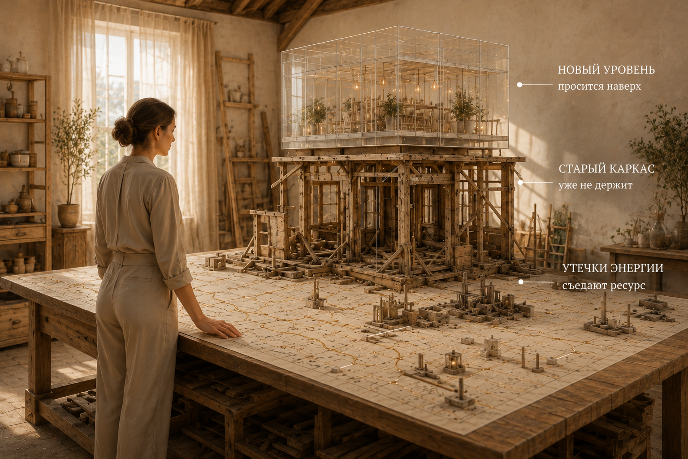
Точка перехода
Переход часто начинается спокойно. Снаружи всё может быть на месте: работа, семья, статус, деньги, опыт, привычный ритм. Но внутри прежняя роль уже тесна.
Человек продолжает делать знакомое, но жизнь больше не даёт прежнего вкуса, энергии и движения.
Понимания недостаточно. Переход начинается, когда прежняя идентичность исчерпана, а новая собирается в теле, решениях и среде.
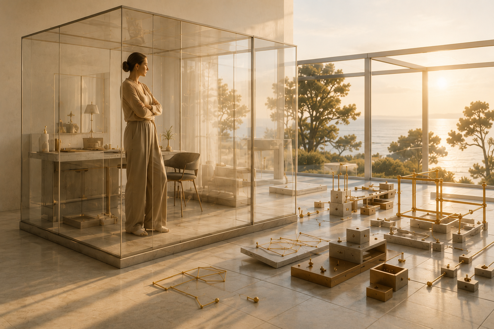
Пересборка жизни сохраняет ценное из уже построенного и настраивает всю систему под следующий уровень человека.
Зачем нужен метод
Когда человек вырос из прежнего уровня, старые инструменты начинают давать слабый или противоположный результат. Если изменилась сама точка жизни, прежний способ решения уже не подходит.
Метод помогает увидеть, где вы сейчас находитесь, какая сфера забирает больше всего энергии, какой уровень уже исчерпан, какой переход созрел и что нужно закрепить в теле, действиях, среде и решениях.
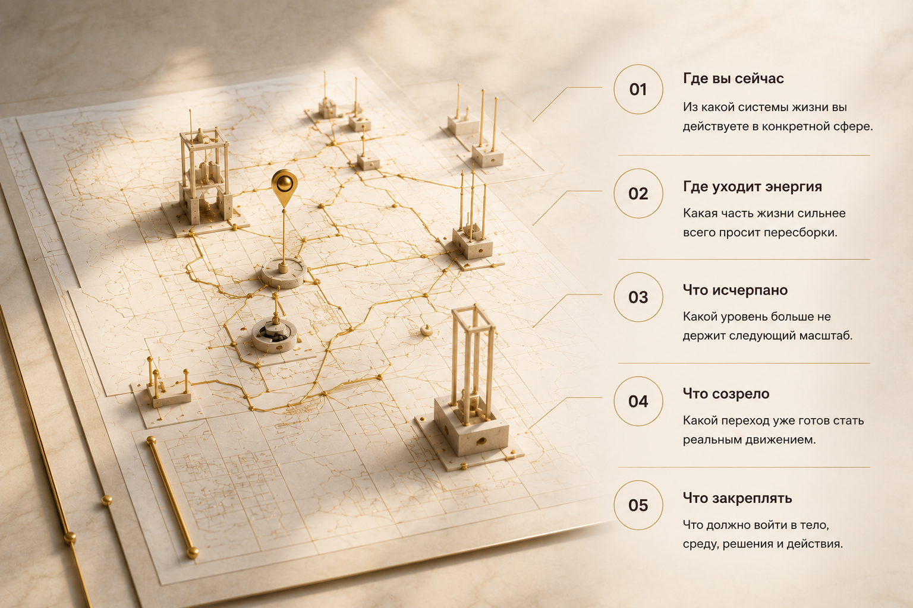
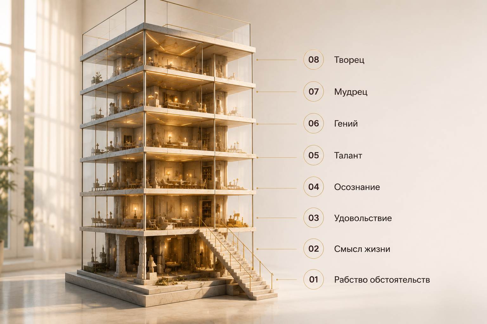
Карта метода
Это карта того, из какого внутреннего состояния человек живёт: как принимает решения, строит отношения, обращается с телом, деньгами, энергией и своей силой.
Уровень не описывает человека целиком. Он показывает, из какого состояния человек сейчас действует в конкретной сфере жизни.
Страх, прошлый опыт и внешние обстоятельства управляют выбором.
Поиск направления становится сильнее привычки и ожиданий.
Возвращается контакт с желаниями, телом и вкусом жизни.
Понимание сценариев переводится в действия.
Сила и потенциал принимают устойчивую форму.
Собственная природа становится основой системы жизни.
Опыт соединяется с ответственностью и ясным влиянием.
Создаются системы и пространства для новой реальности.
Как читать карту
Уровень показывает текущее качество проживания жизни в конкретной сфере.
В профессии человек может быть в Таланте, в отношениях — в Смысле жизни, в теле — в Осознании.
Инсайт ещё не становится образом жизни. Новое понимание должно войти в тело, выборы, среду, деньги, действия и результаты.
Четыре сферы
Метод смотрит не только на одну проблему. Он показывает, как устроена вся система жизни и какая сфера сейчас просит пересборки.
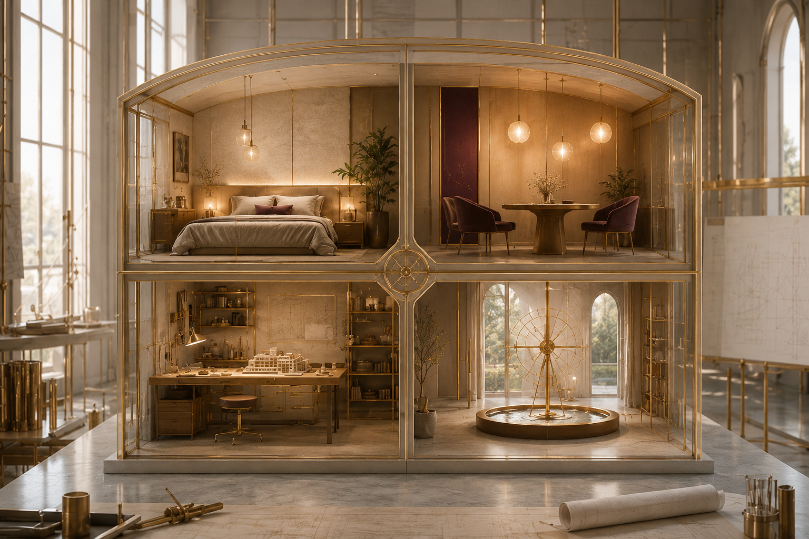
Здоровье, энергия, сон, привычки, быт, деньги, ощущение устойчивости.
Поддерживают следующий уровень — или удерживают в старом режиме?Партнёрство, семья, дети, дружба, границы, отношения с собой.
Выбор, любовь и зрелость — или боль, нужда и старая роль?Дело, профессия, деньги, влияние, способность создавать ценность.
Сила реализуется — или обслуживает чужие задачи?Внутренний стержень, связь со своим путём, способность слышать себя.
Свой путь — или чужая картина успеха и ожиданий?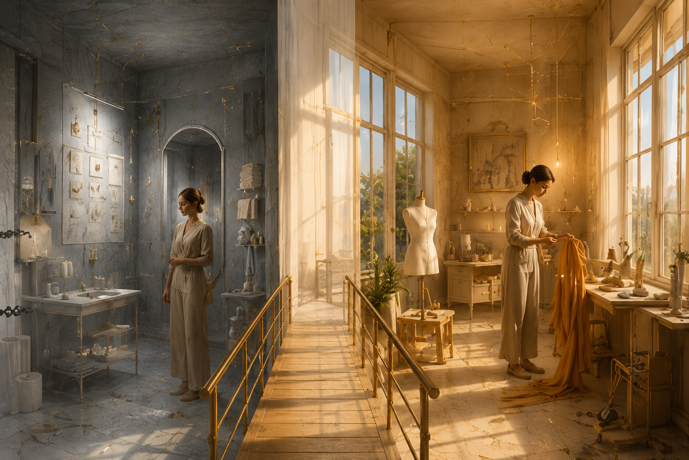
Главный переход
Для людей, которые уже много занимались собой, ключевой переход часто лежит между Осознанием и Талантом.
Здесь нужны энергия, телесная опора, ясное направление, поддерживающая среда, точные действия и видимый результат.
Закрепление перехода
Переход держится не только на понимании. Он становится устойчивым, когда новое состояние поддерживается энергией, действиями и внутренним ориентиром.
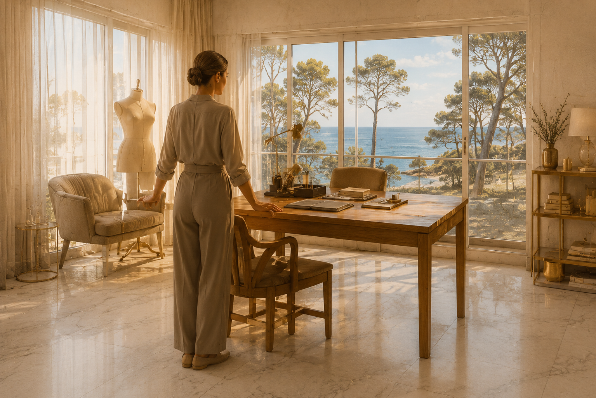
Энергия — топливо перехода. Без неё сложно держать границы, менять привычки и выдерживать новый масштаб.
Новый уровень закрепляется через реальные шаги: разговоры, завершения, выборы, изменение среды и новый ритм.
Человек начинает слышать своё направление и выбирать не из страха, вины или чужой картины успеха.
Разбор точки перехода
Работа начинается с реальной жизни человека. Сначала определяется главная точка напряжения: сфера, где прежний уровень уже исчерпан. Затем мы смотрим, как эта точка связана с остальной системой жизни.
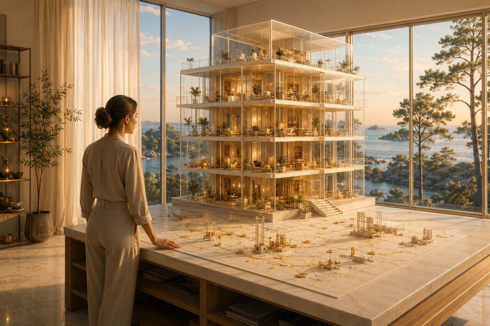
Иногда первый точный шаг — восстановить ресурс, стабилизировать состояние или подключить профильную поддержку.
ОПЫТ КЛИЕНТОВ
Елена, Марина и Анна рассказывают о своём опыте работы со Светланой.
Вопросы
Нет. Это рабочая карта, а не требование принять определённую картину мира. Её полезность проверяется на вашей реальной жизни: помогает ли она увидеть главный узел, следующий переход и действия для его закрепления.
Готовая формулировка не обязательна. Разбор начинается с фактов: где уходит энергия, что повторяется, какие решения откладываются и какая сфера сильнее всего удерживает прежний способ жить.
Нет. Он помогает увидеть, из какой системы вы сейчас выбираете, что уже исчерпано и что потребуется для перехода. Сам выбор, действия и ответственность остаются у вас.
Если первоочередная задача состоит в восстановлении ресурса или стабилизации состояния, первым шагом может стать профильная помощь. Метод не должен подменять её.
Это нормально. Метод не присваивает человеку один общий уровень. Каждая сфера рассматривается отдельно, а затем определяется ведущая точка перехода: та, изменение которой даст опору всей системе жизни.
Уровень используется как рабочая гипотеза, а не как ярлык или диагноз. Она проверяется по фактам: куда уходит энергия, какие выборы повторяются, что уже исчерпано и какие действия действительно меняют результат.
Три формата пересборки жизни
Формат выбирается по глубине задачи, состоянию человека и тому, сколько системы нужно перестроить.
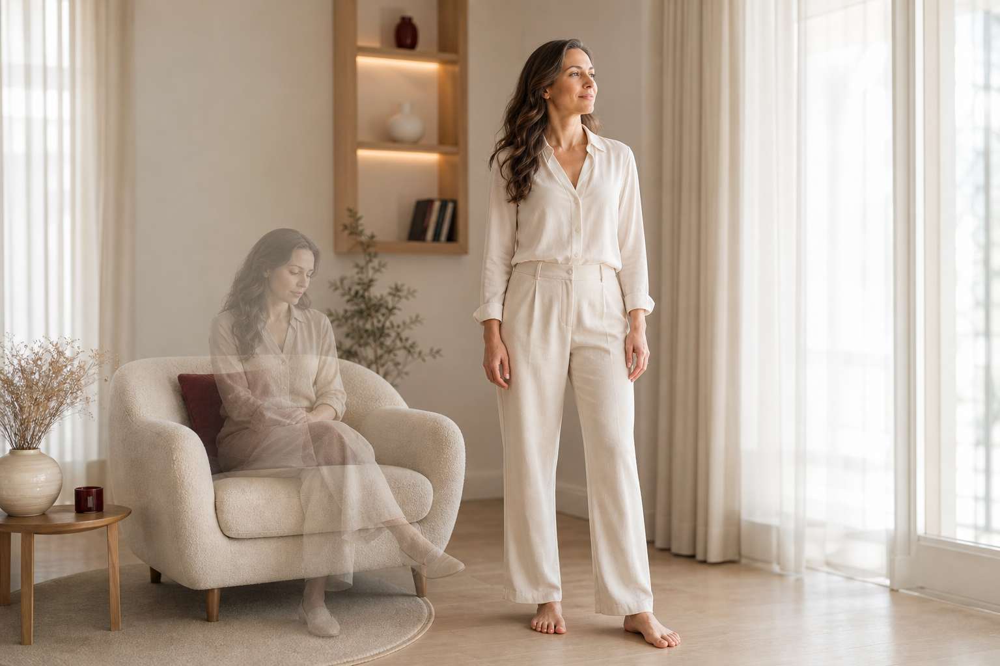
Когда система удерживает старую траекторию.
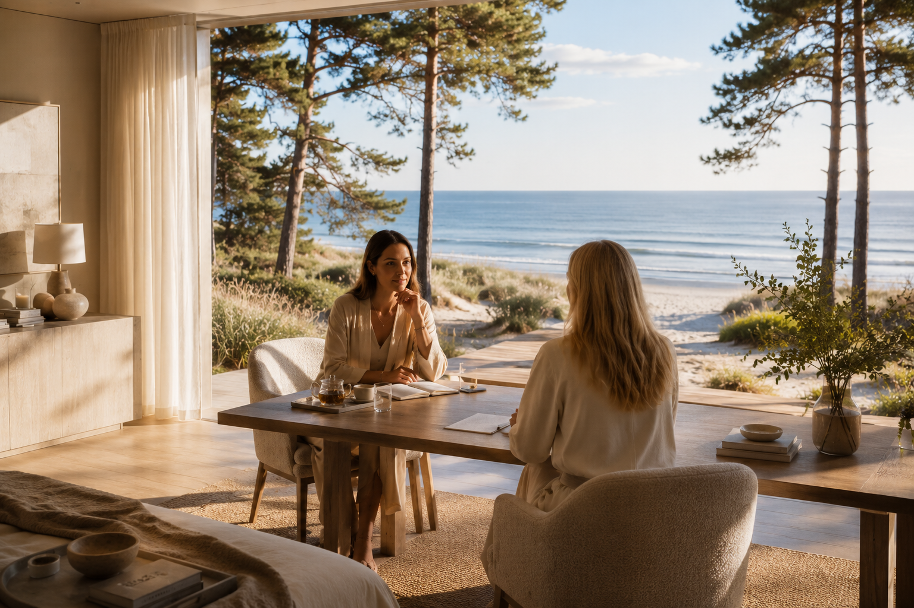
Когда среда возвращает в прежнюю роль.
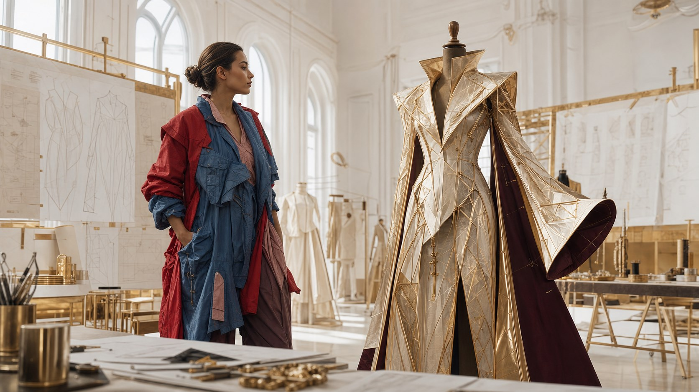
Когда нужно пересобрать всю систему жизни.